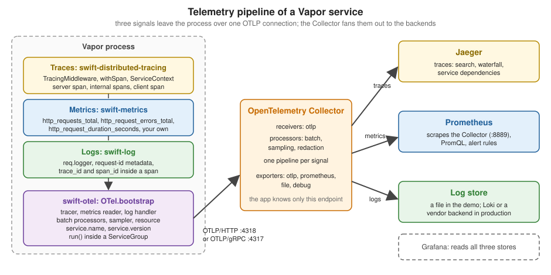

Tracing, Metrics & OpenTelemetry
|
This content was generated with the assistance of AI and should be verified against the official documentation before being relied on in production. |
This page is written against Vapor 4.122.2 on Swift 6.4 (a package with tools version 6.3 in the Swift 6 language mode,
as in the official template), with swift-otel 1.6.0, swift-distributed-tracing 1.7.2, swift-metrics 2.12.0,
swift-prometheus 2.3.0, swift-service-lifecycle 2.13.0, swift-log 1.16.1 and AsyncHTTPClient 1.36.2, checked on
2026-10-17. The Collector, Jaeger and Prometheus ran as containers (otel/opentelemetry-collector-contrib:0.140.0,
jaegertracing/jaeger:2.11.0 and prom/prometheus:v3.7.3). Every Swift listing was compiled without warnings; the
service was started and exercised with curl, its traces were read back from Jaeger’s query API, its metrics from the
Collector’s endpoint and from Prometheus’s HTTP API, and its logs from the Collector’s file exporter; the seven tests
shown pass. The output on the page is captured from those runs. Grafana was not run. Vapor 5 is at 5.0.0-beta.4 and is
not released yet; where it differs, that is noted from its sources. The page extends the Bookshelf service of the
earlier pages of this section. Swift itself is covered by the Swift
Reference, task-local values and structured concurrency by
Async/Await and Tasks. The same topics in Rust are in
OpenTelemetry & Distributed Tracing,
Metrics & SLOs and Logging &
Tracing; the server side of Prometheus is in the site’s Prometheus section, and
OpenTelemetry for LLM applications in Observability with
OpenTelemetry.
Three signals, three API packages, one backend
An observable service emits three kinds of telemetry, and the Swift server ecosystem splits each into an API package that libraries call and a backend that the application installs once:
| Signal | API package | What Vapor does with it | Backends |
|---|---|---|---|
Logs |
swift-log ( |
|
Vapor’s console logger, swift-otel’s log handler, others |
Metrics |
swift-metrics ( |
The default responder records a request counter, an error counter and a duration timer per route |
swift-prometheus, swift-otel, others |
Traces |
swift-distributed-tracing ( |
|
swift-otel, others |
Two properties of this design matter in practice:
-
Without a backend, the calls are no-ops. Vapor and its libraries (Vapor Queues counts jobs, AsyncHTTPClient can create client spans) call the APIs unconditionally; the cost is near zero until the application bootstraps a backend. Your handlers can call
withSpanandCounter(...).increment()today and get data the day a backend is installed. -
A backend is installed once per process.
LoggingSystem.bootstrap,MetricsSystem.bootstrapandInstrumentationSystem.bootstrapare process-global, and a second call is a programming error (swift-otel documents that bootstrapping a subsystem twice is a fatal error). This is why the template’sLoggingSystem.bootstrap(from:)and swift-otel’s bootstrap must be arranged together, as the entry point below does, and why tests need a different mechanism (Testing spans and metrics).
swift-otel is a backend for all three signals that exports them over the OpenTelemetry Protocol (OTLP); the project describes itself as "an OTLP backend for Swift Log, Swift Metrics, and Swift Distributed Tracing" and states that it is not an instrumentation API or a general SDK. swift-prometheus is a metrics backend that keeps counters, gauges and histograms in memory and renders them in the Prometheus text format for a scrape. Choose one metrics backend (see Two ways to export metrics).
The pipeline

The application knows one thing about the outside world: the address of an OTLP receiver. Everything after that is the Collector’s configuration, which changes without redeploying the service: where traces, metrics and logs go, which attributes are removed, whether a vendor receives a copy. The Collector also takes over work an application should not do, such as retrying a failed export to a slow backend, and it is the place to apply a policy to every service at once (redaction, tail-based sampling). The rest of the page builds the left half in Swift, then the right half in a Compose file.
Package setup
// Package.swift (excerpt)
dependencies: [
.package(url: "https://github.com/vapor/vapor.git", from: "4.122.2"),
.package(url: "https://github.com/swift-otel/swift-otel.git", from: "1.6.0"),
.package(url: "https://github.com/apple/swift-distributed-tracing.git", from: "1.7.2"),
.package(url: "https://github.com/apple/swift-metrics.git", from: "2.12.0"),
.package(url: "https://github.com/swift-server/swift-service-lifecycle.git", from: "2.13.0"),
],
targets: [
.executableTarget(name: "App", dependencies: [
.product(name: "Vapor", package: "vapor"),
.product(name: "OTel", package: "swift-otel"),
.product(name: "Tracing", package: "swift-distributed-tracing"),
.product(name: "Instrumentation", package: "swift-distributed-tracing"),
.product(name: "Metrics", package: "swift-metrics"),
.product(name: "ServiceLifecycle", package: "swift-service-lifecycle"),
]),
.testTarget(name: "AppTests", dependencies: [
.target(name: "App"),
.product(name: "VaporTesting", package: "vapor"),
.product(name: "InMemoryTracing", package: "swift-distributed-tracing"),
.product(name: "MetricsTestKit", package: "swift-metrics"),
]),
]Source: swift-otel documentation
Notes on the manifest, all checked while resolving the package for this page:
-
The swift-otel 1.6.0 manifest has tools version 6.2, a deployment target of macOS 13, and two package traits,
OTLPHTTPandOTLPGRPC, both enabled by default. With both on, the dependency graph includes grpc-swift-2, its protobuf support and NIO HTTP/2 transport, and a first build takes several minutes. Declaring the dependency withtraits: ["OTLPHTTP"]removed all grpc-swift packages fromPackage.resolvedand the same code built in under two minutes. Choose gRPC only if your Collector or vendor requires it. -
Vapor, swift-otel and your code must agree on one version of each API package. swift-otel 1.6.0 needs swift-distributed-tracing 1.7.2 or newer, and SwiftPM resolves one version for the whole graph, so declare the API packages you import (
Tracing,Instrumentation,Metrics) in your own manifest instead of relying on Vapor’s transitive dependency, as the Middleware page also advises. -
swift-otel is a dependency of your application, not of Vapor. Nothing in Vapor’s
Package.swiftmentions it.
Tracing
Vocabulary
A trace is the story of one request across every service it touches; it is a tree of spans. A span has a name,
a kind (server for the span that handles an incoming request, client for an outgoing call, internal for work
inside a process), a start and an end, key-value attributes, a status and, optionally, events and recorded errors.
Spans belong together because they share a 16-byte trace id and each child names its parent’s span id; across processes,
the pair travels in the W3C traceparent header (00-<trace id>-<parent span id>-<flags>), whose last field carries
the sampled flag.
In swift-distributed-tracing the current position in the tree is a ServiceContext: a typed, immutable key-value bag
(from the swift-service-context package) that a tracer stores the span identifiers in. withSpan(_:context:ofKind:_:)
starts a span as a child of the context it is given (by default ServiceContext.current, a task-local value), runs
the closure with the new span’s context as ServiceContext.current, records any error the closure throws, and ends the
span when the closure returns. Because the context is task-local, child tasks and awaited calls inherit it with no
parameter to pass; this is the part of Swift concurrency that makes tracing cheap to write, and the part that breaks if
work escapes the task tree (an unstructured Task.detached, a callback from a library that hops to its own thread).
TracingMiddleware
Vapor’s integration is a single middleware, TracingMiddleware, in 4.x an AsyncMiddleware. It is not installed by
default. For each request it:
-
copies the request’s
ServiceContext(req.serviceContext) and asks the bootstrapped instrument to extract a parent from the request headers, which with swift-otel’s default propagator means thetraceparentandtracestateheaders; -
starts a
serverspan named after the route template, for exampleGET /books/:isbn, orvapor_route_undefinedwhen no route matched, so span names have low cardinality; -
fills in the HTTP semantic-convention attributes listed below;
-
stores the span’s context in
req.serviceContextwhile the rest of the chain runs and restores the parent afterwards; -
runs the chain, then sets
http.response.status_codeand marks the span as an error for a 5xx response.
| Attribute | Value |
|---|---|
|
From the request, verbatim |
|
The route template, such as |
|
The configured listen address |
|
The peer, as Vapor sees it |
|
|
|
The |
|
The response status, set after the chain returns |
The initializer TracingMiddleware(setCustomAttributes:) takes a closure that receives the attribute bag and the
request on every request, so it must be cheap and must only copy bounded, non-sensitive values. The semantic conventions
are defined in OpenTelemetry: HTTP spans; the source is
TracingMiddleware.swift.
Where the middleware sits decides what the span measures. The default stack is RouteLoggingMiddleware, then
ErrorMiddleware (see Error Handling) (Application+Middleware.swift), then
whatever you add with app.middleware.use; a middleware added with app.grouped(...) runs inside the group, after
the global ones. The span therefore covers the middleware that comes after it, the router and the handler, and not the
default ones. The example registers it on a route group so that the health probe is not traced at all (a probe every few
seconds would otherwise be the most common span in the system). Middleware order in general is on the
Middleware page.
Spans in handlers, and the three details that matter
The listing is the Bookshelf service used for every capture on this page. GET /books/:isbn asks a "remote catalog"
(the same process, over HTTP, so that one process shows a two-hop trace) and wraps that in its own span.
import Tracing
import Vapor
func configure(_ app: Application) async throws {
// Restores request.serviceContext around Vapor's internal future boundaries (off by default; see the page).
app.traceAutoPropagation = true
// AsyncHTTPClient opens its own client span for every request, but Vapor's future-based Client cannot pass it the
// current context, so that span would start a separate trace. TracedClient creates the right one instead.
app.http.client.configuration.tracing.tracer = nil
try routes(app)
}
func routes(_ app: Application) throws {
// Unauthenticated operational endpoints stay outside the traced group: no span per probe.
app.get("health") { _ in HTTPStatus.ok }
// Everything else is traced and counted.
let api = app.grouped(TracingMiddleware { attributes, request in
// Custom attributes: bounded, non-sensitive values only.
if let client = request.headers.first(name: "X-Client-Version") {
attributes["bookshelf.client.version"] = client
}
})
// A second ErrorMiddleware *inside* the span turns a thrown Abort into a response before the span ends, so the
// span carries http.response.status_code and a 404 is not recorded as an error (see the page).
.grouped(ErrorMiddleware.default(environment: app.environment))
.grouped(InFlightMiddleware())
api.get("books", ":isbn") { req async throws -> BookDTO in
let isbn = try req.parameters.require("isbn")
let clock = ContinuousClock()
let start = clock.now
do {
// withSpan picks up the current ServiceContext: the server span created by TracingMiddleware is the parent.
let book = try await withSpan("catalog.lookup") { span in
span.attributes["bookshelf.catalog.source"] = "remote"
// Logged inside the span: the OTLP log record carries this span's trace id and span id.
req.logger.info("Looking up a book in the remote catalog")
// The "remote catalog" is this same process, reached over HTTP to show a two-hop trace.
let response = try await req.tracedGet(URI(string: "http://127.0.0.1:\(req.application.http.server.configuration.port)/catalog/isbn/\(isbn)"))
guard response.status == .ok else { throw Abort(.badGateway) }
return try response.content.decode(BookDTO.self)
}
BookshelfMetrics.lookup(outcome: "found")
BookshelfMetrics.lookupDuration(clock.now - start)
return book
} catch {
BookshelfMetrics.lookup(outcome: "error")
throw error
}
}
api.get("catalog", "isbn", ":isbn") { req async throws -> BookDTO in
let isbn = try req.parameters.require("isbn")
try await Task.sleep(for: .milliseconds(30))
return BookDTO(isbn: isbn, title: "Dune", seenTraceparent: req.headers.first(name: "traceparent"))
}
api.get("missing") { _ async throws -> HTTPStatus in
throw Abort(.notFound, reason: "No such shelf.")
}
api.get("boom") { _ async throws -> HTTPStatus in
throw Abort(.internalServerError, reason: "simulated failure")
}
}
struct BookDTO: Content, Equatable {
let isbn: String
let title: String
let seenTraceparent: String?
}Source: Vapor docs: Tracing
What happens at run time, from the captures of this service:
GET /books/:isbn server 32 ms
└── catalog.lookup internal 31 ms
└── GET client 31 ms
└── GET /catalog/isbn/:isbn server 30 ms (second request, same trace)That tree was read from Jaeger’s query API (/api/traces?service=bookshelf), and the four spans share one trace id.
Three details of how it came to be need spelling out.
1. withSpan nests through the task-local context, and req.serviceContext is only the server span. Inside
withSpan("catalog.lookup"), ServiceContext.current is the lookup span; req.serviceContext is still the server
span, because only TracingMiddleware assigns it. Code that builds a span from req.serviceContext instead of the
current context therefore makes a sibling, not a child. The first version of the helper in the next section did exactly
that: a test showed the client span’s parent was the server span (span-1) while the lookup was span-2. The helper
now passes ServiceContext.current ?? serviceContext. Rule: prefer the task-local context, fall back to
req.serviceContext only outside a withSpan.
2. traceAutoPropagation is not needed for async code. Application.traceAutoPropagation (default false) makes
Vapor restore req.serviceContext as the task-local context "across Vapor-internal EventLoopFuture boundaries", and
its documentation warns of performance implications. In a pure async handler the task-local context already flows from
the withSpan call in TracingMiddleware into the handler: a test that ran the same request with the flag on and off
(@Test(arguments: [true, false])) produced the same parent for the lookup span in both. The flag matters for code that
still mixes in futures (req.eventLoop.submit, flatMap chains through libraries not yet converted). The configuration
above turns it on because the demo is cheap; a pure async service can leave it off. Vapor 5 has neither the flag nor
req.serviceContext; its TracingMiddleware reads ServiceContext.current.
3. A thrown error ends the span as an error, without a status code, unless an ErrorMiddleware sits inside the span.
The default ErrorMiddleware sits in the global stack, outside anything you register later, so it converts a thrown
Abort into a response outside the span.
TracingMiddleware therefore sees a thrown error, and withSpan records it and sets the span’s status to error, even
for Abort(.notFound), and http.response.status_code is never set because no response came back. The measured results
in the test suite:
| Handler throws | Span without the inner ErrorMiddleware |
Span with it |
|---|---|---|
|
status error, no |
no error status, |
|
status error, no status code |
status error, status code 500 |
The configuration registers ErrorMiddleware.default(environment:) again, inside the traced group, so that the span
sees the response. Client errors then stop polluting error-rate dashboards and traces carry the status the client saw.
The inner middleware also logs the error inside the span, so that log line is correlated
(see Logs and correlation).
4. The span records the query string. url.query is set verbatim, and so is url.path; a request to
/missing?token=abc exported url.query = token=abc to Jaeger. Anything that puts a secret in a query string (a
mistake, but a common one) leaks into every trace backend. setCustomAttributes can add attributes but cannot remove
the standard ones, so strip them in the Collector (see Running the backends, where an attributes processor
deletes url.query and the same request left no query in Jaeger) or write your own middleware instead of
TracingMiddleware. Do not put user ids, e-mail addresses or tokens into attributes of a span you do not control the
retention of.
Sampling
Recording every span of every request is rarely affordable. swift-otel implements the standard samplers:
parentBasedAlwaysOn (the default, which samples every root span and follows the parent’s decision otherwise),
alwaysOn, alwaysOff, traceIDRatio, and parentBasedTraceIDRatio(ratio:). In code they are
config.traces.sampler = .parentBasedTraceIDRatio(ratio: 0.1)! (the factory returns an optional that is nil for a
ratio outside the range 0 to 1); in the environment OTEL_TRACES_SAMPLER=parentbased_traceidratio with
OTEL_TRACES_SAMPLER_ARG=0.1.
Two measured behaviours, both with the demo configured for ratio 1.0 in code and overridden from the environment:
-
with
OTEL_TRACES_SAMPLER_ARG=0.0, three requests without atraceparentproduced no trace in Jaeger, which also shows that environment variables take precedence over the code configuration; -
a fourth request carrying
traceparent: 00-0af7651916cd43dd8448eb211c80319c-b7ad6b7169203331-01(sampled flag set) was recorded, as a child ofb7ad6b7169203331, because a parent-based sampler follows the caller’s decision. Sampling is a decision made at the edge and honoured by every service behind it, which keeps traces complete.
This is head-based sampling: the decision is made before anyone knows whether the request will be slow or fail. To keep every error and slow trace and a fraction of the rest, send all spans to the Collector and use its tail-sampling processor; that setup was not run for this page.
Carrying the trace across a call: req.client
The HTTP Client page explains that Vapor’s Client is built on the future-based
API of AsyncHTTPClient, which cannot take the caller’s ServiceContext. The consequences, observed here:
-
AsyncHTTPClient opens a
clientspan for each request by itself (its tracer defaults to the globally bootstrapped one), but without a parent. In the first run of the demo each outgoing call showed up in Jaeger as a separate single-span trace namedGET, unrelated to the request that caused it. -
Nothing injects
traceparentinto the outgoing request, so the receiving service starts a new trace.
The fix is to make the client span yourself, with the right parent, and inject the headers explicitly. The second half
of that is an Injector for HTTPHeaders, the first half is withSpan(..., ofKind: .client):
import Instrumentation
import NIOHTTP1
import ServiceContextModule
import Tracing
import Vapor
/// Writes the propagation headers (`traceparent`, `tracestate`, ...) the active instrument produces into `HTTPHeaders`.
struct HTTPHeadersInjector: Injector {
func inject(_ value: String, forKey key: String, into headers: inout HTTPHeaders) {
headers.replaceOrAdd(name: key, value: value)
}
}
extension Request {
/// A GET through `req.client` wrapped in a client span, with the trace context injected into the outgoing headers.
func tracedGet(_ uri: URI, headers: HTTPHeaders = [:]) async throws -> ClientResponse {
// The current task-local context wins: it holds the innermost open span. req.serviceContext holds only the server span.
try await withSpan("GET", context: ServiceContext.current ?? serviceContext, ofKind: .client) { span in
var headers = headers
InstrumentationSystem.instrument.inject(span.context, into: &headers, using: HTTPHeadersInjector())
span.attributes["http.request.method"] = "GET"
span.attributes["server.address"] = uri.host
span.attributes["server.port"] = uri.port
span.attributes["url.path"] = uri.path // never the query: it may carry tokens
let response = try await client.get(uri, headers: headers) { $0.timeout = .seconds(3) }
span.attributes["http.response.status_code"] = Int(response.status.code)
if response.status.code >= 500 { span.setStatus(.init(code: .error)) }
return response
}
}
}and the configuration line that silences AsyncHTTPClient’s duplicate, parentless span (it is read when the shared client
is created, so set it in configure, before the first call):
app.http.client.configuration.tracing.tracer = nilWith that in place the trace above is one tree, and the upstream sees the injected header. The seenTraceparent field
of the response is the traceparent header the "catalog" received, whose trace id (starting 8f27c964) is the one on
the server span of the first request and whose parent id (c256322c and following) is the client span:
{"isbn":"9780441013593","seenTraceparent":"00-8f27c964ab7da0e36926dd21165ff012-c256322c33021f38-01","title":"Dune"}Details of the helper:
-
The attributes are set from the URI, and it records
url.pathbut never the query, for the reason given above. -
It uses the instrument that swift-otel installed (
InstrumentationSystem.instrument), so the header format followsconfig.propagators. The default is W3C Trace Context (traceparent,tracestate); thePropagatortype also offers baggage, B3 (single and multi header), Jaeger, X-Ray and OT-Trace for mixed fleets, andOTEL_PROPAGATORS=tracecontext,baggageselects them from the environment. -
Do not forward
Authorizationor cookies "for the trace’s sake". The trace headers are all a tracing system needs. -
A simpler alternative that needs no tracing library at all is copying
traceparent,tracestateandbaggagefrom the incoming request to the outgoing one, as the HTTP Client page does. It keeps the trace together but adds no client span.
Background work. Vapor Queues records metrics (next section) but has no tracing code, and the job payload is yours: a
job dispatched from a request runs in another task, usually another process, with no ServiceContext. To link the two,
put the traceparent string into the payload and, in the job, start a span whose parent you extract from it with the
same instrument; the spans then share a trace across the queue. That is a convention you implement; nothing does it for
you. The jobs themselves are on the Queues & Background Jobs page.
Metrics
The swift-metrics types
All metric handles are created by label and dimensions and are cheap to construct; the backend deduplicates them by (label, dimensions):
| Type | Use |
|---|---|
|
A value that only goes up: requests served, jobs failed. |
|
A value that goes up and down: requests in flight, queue depth. |
|
A distribution of sampled values: response sizes. With |
|
A distribution of durations. |
Dimensions become labels, and each distinct combination of label values is a separate time series that the backend stores forever. Use dimensions with a small, fixed set of values (a route template, a method, an outcome, a status class) and never an ISBN, a user id or a free-text message. This is the same cardinality rule as in Prometheus itself; see Data model & metric types and Instrumenting applications.
What Vapor already measures
Without any code, DefaultResponder records three metrics for every request that reaches the router, unless
app.http.server.configuration.reportMetrics is set to false (default true):
| Metric | Type | Dimensions |
|---|---|---|
|
counter |
|
|
counter |
|
|
timer, displayed in seconds |
|
path is the route template (/books/:isbn), never the concrete URL. A request that matches no route is recorded with
method="undefined" and path="vapor_route_undefined", so a scanner probing thousands of paths cannot create thousands
of series. These three are the RED method: Rate, Errors, Duration. That is why most services need no request
middleware of their own. The test vaporCountsRequestsAndErrorsPerRouteTemplate below pins both properties. The source
is DefaultResponder.swift.
Vapor Queues adds dispatched.jobs.counter, jobs.in.progress.meter, a <JobName>.jobDurationTimer per job type, and
success.completed.jobs.counter and error.completed.jobs.counter, read from the queues 1.18.0 sources. Their names
contain dots, which is not what a Prometheus-style exporter wants, so look at the name your exporter actually exposes
before writing a query.
Your own metrics
The Bookshelf additions are an in-flight meter (the "saturation" signal RED does not cover) and two business metrics:
import Metrics
import Vapor
/// A gauge-like Meter of requests being served right now. Vapor already emits the RED counters and the duration timer.
struct InFlightMiddleware: AsyncMiddleware {
let meter = Meter(label: "bookshelf_http_requests_in_flight")
func respond(to request: Request, chainingTo next: any AsyncResponder) async throws -> Response {
meter.increment()
defer { meter.decrement() }
return try await next.respond(to: request)
}
}
/// Business metrics: low-cardinality dimensions only (an outcome, never an ISBN or a user id).
enum BookshelfMetrics {
static func lookup(outcome: String) {
Counter(label: "bookshelf_catalog_lookups_total", dimensions: [("outcome", outcome)]).increment()
}
static func lookupDuration(_ duration: Duration) {
Timer(label: "bookshelf_catalog_lookup_duration_seconds", preferredDisplayUnit: .seconds).record(duration: duration)
}
}Source: swift-metrics documentation
The middleware uses defer so the meter is decremented when the handler throws; the handler above records the lookup
duration as a Duration taken from a ContinuousClock. Metric labels use the unit in the name (_seconds, _total)
as the Prometheus naming practices recommend.
Two ways to export metrics
Pull with swift-prometheus. The application keeps the registry and serves it; Prometheus scrapes it. Add the
Prometheus product of swift-prometheus 2.3.0, and register the factory before the first metric is created:
import Metrics
import Prometheus
import Vapor
// Pull model: swift-prometheus is the swift-metrics backend and the app serves the text exposition itself.
let registry = PrometheusCollectorRegistry()
MetricsSystem.bootstrap(PrometheusMetricsFactory(registry: registry))
let app = try await Application.make(.detect())
app.get("books", ":isbn") { req async throws -> String in
try await Task.sleep(for: .milliseconds(20))
return req.parameters.get("isbn") ?? ""
}
app.get("boom") { _ async throws -> String in throw Abort(.internalServerError) }
// Keep it off the public listener in production: bind a second, internal-only server or filter at the proxy.
app.get("metrics") { _ async -> Response in
var headers = HTTPHeaders()
headers.contentType = HTTPMediaType(type: "text", subType: "plain", parameters: ["version": "0.0.4", "charset": "utf-8"])
return Response(status: .ok, headers: headers, body: .init(string: registry.emitToString()))
}
try await app.execute()
try await app.asyncShutdown()Source: swift-prometheus documentation
Running that program and requesting /metrics after three lookups and one failure returned (histogram buckets left
out):
# TYPE http_request_errors_total counter
http_request_errors_total{method="GET",path="/boom",status="500"} 1
# TYPE http_request_duration_seconds histogram
http_request_duration_seconds_sum{method="GET",path="/boom",status="500"} 0.0007725
http_request_duration_seconds_count{method="GET",path="/boom",status="500"} 1
http_request_duration_seconds_sum{method="GET",path="/books/:isbn",status="200"} 0.072023334
http_request_duration_seconds_count{method="GET",path="/books/:isbn",status="200"} 3
# TYPE http_requests_total counter
http_requests_total{method="GET",path="/books/:isbn",status="200"} 3
http_requests_total{method="GET",path="/boom",status="500"} 1Timers become histograms; the default duration buckets are 5 ms, 10 ms, 25 ms, 50 ms, 100 ms, 250 ms, 500 ms, 1 s, 2.5
s, 5 s and 10 s, and PrometheusMetricsFactory.durationHistogramBuckets overrides them per metric label. Serve
/metrics on an internal listener or filter it at the proxy: the endpoint exposes route names and traffic volumes and
has no authentication. This page’s single-listener listing is the shortest correct demo, not a production layout.
Push with swift-otel. With OTel.bootstrap the same metrics leave over OTLP every metrics.exportInterval (default
60 seconds; OTEL_METRIC_EXPORT_INTERVAL in milliseconds; the demo uses 5 seconds) and the Collector’s prometheus
exporter exposes them for Prometheus to scrape. The metric names, types and labels were unchanged by the trip: the
Collector’s endpoint served http_requests_total{method="GET",path="/books/:isbn",status="200"} and a
http_request_duration_seconds histogram with the same buckets, plus labels that identify the source
(job="bookshelf", taken from service.name, and otel_scope_*). A Meter arrived as a gauge.
swift-metrics allows only one backend at a time (MetricsSystem.bootstrap is once per process), though it ships a
MultiplexMetricsHandler(factories:) for sending to several. Pick pull when Prometheus is the only consumer and you
want the fewest moving parts; pick push when traces and logs already go through the Collector, so that all telemetry has
one path, one resource identity and one place to change policy.
RED queries
With Prometheus scraping the Collector every five seconds, the standard RED queries ran against the data above. The values are the cumulative results of that short run:
| Question | PromQL | Result in the run |
|---|---|---|
Requests per route and status |
|
4 for |
Error ratio |
|
0.0909 (1 failure in 11 requests) |
p95 latency per route |
|
0.07 s for |
Requests in flight |
|
0 when idle |
Those queries run over cumulative counters because the run was a few requests long. In a dashboard or an alert, wrap the
counters and buckets in rate(...[5m]) to get per-second rates over a window.
histogram_quantile interpolates inside the bucket that contains the quantile, so with only a few requests the value is
an estimate bounded by bucket edges (the 50 ms to 75 ms bucket here). Alert rules and dashboards on these queries are
covered in Recording & alerting rules and
Grafana dashboards & visualization.
Vapor 5
In 5.0.0-beta.4 (see What’s New, Upgrading and Vapor 5) the
metrics move out of the responder into an opt-in MetricsMiddleware that follows the OpenTelemetry HTTP metrics
conventions (http.server.active_requests as a meter, request and response body size recorders, a duration timer, with
http.request.method, url.scheme, http.route and http.response.status_code dimensions), so dashboards written for
the http_requests_total family will need new queries on upgrade. VaporTesting gains a task-local metrics system for
tests. Both are read from the beta sources, not run. See
MetricsMiddleware.swift.
swift-otel
Bootstrapping
OTel.bootstrap(configuration:) installs the backend for each enabled signal, returns a Service that does the
background work (batching, timers, exporting), and reads OTEL_* environment variables after your code, so operators
can override what you set. It throws if all three signals are disabled. The service must run for anything to be
exported, and it must be stopped gracefully for the last batch to leave. The bootstrapping type for this page:
import ConsoleKit
import Logging
import OTel
import ServiceLifecycle
import Vapor
/// Switches the process-global observability systems on. Call it exactly once, before `Application.make`.
enum Telemetry {
/// - Parameter exportLogs: when true, swift-otel installs the logging backend and sends log records over OTLP;
/// when false, Vapor's own `LoggingSystem.bootstrap` (console or JSON) stays in charge of logs.
static func bootstrap(environment: inout Environment, exportLogs: Bool) throws -> any Service {
var config = OTel.Configuration.default
config.serviceName = "bookshelf" // OTEL_SERVICE_NAME overrides it
config.resourceAttributes["service.version"] = "1.4.0"
config.resourceAttributes["deployment.environment.name"] = environment.name
config.diagnosticLogLevel = .warning // the exporter's own messages
config.logs.enabled = exportLogs
config.traces.sampler = .parentBasedTraceIDRatio(ratio: 1.0)! // keep everything in the demo; 0.1 in production
// The endpoint comes from OTEL_EXPORTER_OTLP_ENDPOINT, e.g. http://otel-collector:4318.
if !exportLogs {
// Keep Vapor's console logs, but add trace_id and span_id to every line written inside a span.
let provider = OTel.makeLoggingMetadataProvider()
try LoggingSystem.bootstrap(from: &environment) { level in
let console = Terminal()
return { label in
ConsoleLogger(label: label, console: console, level: level, metadataProvider: provider)
}
}
}
return try OTel.bootstrap(configuration: config)
}
}Four decisions in it:
-
The service name and resource. Every span, metric and log carries the resource that identifies the process.
serviceNamebecomesservice.name(defaultunknown_service, which is what you see in Jaeger if you forget), andresourceAttributesaddsservice.version,deployment.environment.nameand anything else (OTEL_RESOURCE_ATTRIBUTES=key1=value1,key2=value2from the environment). Set the service name from configuration, the version from the build, and let the orchestrator add pod and node identity. -
The endpoint is not in the code.
OTEL_EXPORTER_OTLP_ENDPOINTsupplies it. The source documents why: an endpoint assigned in code is used as is, so with OTLP/HTTP you must include the signal path yourself (/v1/traces), whereas the default and the environment variable are treated as a base URL to which the exporter appends/v1/traces,/v1/metricsand/v1/logs. Settingconfig.traces.otlpExporter.endpoint = "http://collector:4318"would send traces to the wrong URL. This behaviour is read from the 1.6.0 source documentation; the demo used the environment variable. -
Logs.
config.logs.enabled = exportLogschooses between two designs, explained below. swift-otel can not share the logging system with Vapor’s own bootstrap: if logs are exported, the template’sLoggingSystem.bootstrap(from:)must not run. -
Defaults. Batch span processor: export every 5 seconds (
OTEL_BSP_SCHEDULE_DELAY), 30-second export timeout; log batches every 1 second; protocolhttp/protobuf;diagnosticLogLevel(OTEL_LOG_LEVEL) controls the exporter’s own messages, not yours.OTEL_SDK_DISABLED=truedisables the signals from the outside.
| Configuration property | Environment variable | Default |
|---|---|---|
|
|
|
|
|
empty |
|
|
W3C Trace Context |
|
|
|
|
|
|
|
|
5 seconds |
|
|
60 seconds |
|
|
|
|
|
|
|
|
none, 10 seconds |
The same options exist per signal (metrics.otlpExporter, logs.otlpExporter), and signal-specific variables win over
the shared ones. The general environment-variable contract is in the
OpenTelemetry SDK configuration and
OTLP exporter configuration pages.
Running the exporters next to the server
The service returned by OTel.bootstrap is an ordinary swift-service-lifecycle Service. The entry point runs it in a
ServiceGroup together with an adapter that turns Vapor’s app.execute() into a Service:
import Logging
import NIOCore
import NIOPosix
import ServiceLifecycle
import Vapor
@main
enum Entrypoint {
static func main() async throws {
var env = try Environment.detect()
let exportLogs = Environment.get("BOOKSHELF_OTLP_LOGS") == "true"
// Replaces LoggingSystem.bootstrap(from:) of the template: swift-otel bootstraps logs, metrics and tracing itself.
let observability = try Telemetry.bootstrap(environment: &env, exportLogs: exportLogs)
let app = try await Application.make(env)
do {
try await configure(app)
// The observability service must run next to the server, or nothing is exported. When the server
// returns (Vapor traps SIGINT and SIGTERM itself) the group shuts the exporters down gracefully,
// which flushes the last batches instead of cancelling them.
let group = ServiceGroup(
configuration: ServiceGroupConfiguration(
services: [
.init(service: observability),
.init(
service: ApplicationService(app: app),
successTerminationBehavior: .gracefullyShutdownGroup,
failureTerminationBehavior: .gracefullyShutdownGroup
),
],
logger: app.logger
)
)
try await group.run()
} catch {
app.logger.report(error: error)
try? await app.asyncShutdown()
throw error
}
try await app.asyncShutdown()
}
}
/// Adapts a Vapor Application to swift-service-lifecycle: `run()` returns when the server stops.
struct ApplicationService: Service {
let app: Application
func run() async throws { try await app.execute() }
}The two flavours of shutdown were both observed:
-
Cancelling a task group (the pattern of swift-otel’s Vapor example:
group.addTask { try await observability.run() }, thencancelAll()when the server returns) lost the final export. With the process terminated while it ran, the log showedFailed to export metricswithTimeoutError(underlyingError: Swift.CancellationError()), andmainended withFatal error: Error raised at top level: Swift.CancellationError(). -
The
ServiceGroupabove, with the Vapor service configured to shut the group down when it returns, stopped cleanly onSIGTERM: no error, and a request made one second before the signal, well inside the 5-second metric interval and the batch delay, was present in Jaeger and in the metric totals. Graceful shutdown asks swift-otel’s tracer, batch processors and periodic reader to flush and finish; cancellation only interrupts them.
Vapor installs its own SIGINT and SIGTERM handling inside app.execute(), so the group is created without signal
configuration. A deployment platform’s termination grace period must be longer than the export timeout, or the last
batch is lost anyway (see Application lifecycle & entry
point for the shutdown sequence).
Logs and correlation
The logging bootstrap and log levels themselves are covered in Logging. Two designs for correlation, both run:
Keep Vapor’s logger (exportLogs == false) |
Export logs over OTLP (BOOKSHELF_OTLP_LOGS=true) |
|
|---|---|---|
Where lines go |
stdout, as before |
the Collector, as OTLP log records |
Correlation |
a metadata provider adds |
the record carries trace id and span id as fields |
Entry point |
|
swift-otel installs the logging system; do not call Vapor’s bootstrap |
Cost |
a line to stdout is read by the platform’s log collector |
an exporter queue in the process |
With the first design a line written inside the lookup span was printed as:
[ INFO ] Looking up a book in the remote catalog [request-id: A72C73F2-1458-49FE-B629-E4AB26D81766, span_id: e2bba45b2cd2a2f1, trace_flags: 1, trace_id: 244fad7fdddaaa5b9a3adc7dfb8921dd]With the second, the Collector’s file exporter wrote log records whose traceId and spanId matched the
catalog.lookup span in Jaeger (the trace in that run started with db6b53cd and the span with 58bc408a). A line is
correlated only if it is logged inside a span: the RouteLoggingMiddleware line GET /books/... is written outside
TracingMiddleware and carries no trace id, while the line from the handler, and the error line from the inner
ErrorMiddleware, do. Use the request id for the outside lines.
Running the backends
The Collector receives OTLP and fans out. This configuration is the one used for every capture on the page: traces go to
Jaeger (and through an attributes processor that deletes url.query), metrics are exposed on port 8889 for
Prometheus, logs are written to a file, and a debug exporter prints a summary of everything it received.
receivers:
otlp:
protocols:
grpc:
endpoint: 0.0.0.0:4317
http:
endpoint: 0.0.0.0:4318
processors:
batch: {}
attributes/scrub: # drop what must never reach the trace backend
actions:
- key: url.query
action: delete
exporters:
debug:
verbosity: basic
otlp/jaeger:
endpoint: jaeger:4317
tls:
insecure: true
prometheus:
endpoint: 0.0.0.0:8889
file/logs:
path: /logs/logs.json
service:
pipelines:
traces:
receivers: [otlp]
processors: [attributes/scrub, batch]
exporters: [otlp/jaeger, debug]
metrics:
receivers: [otlp]
processors: [batch]
exporters: [prometheus, debug]
logs:
receivers: [otlp]
processors: [batch]
exporters: [file/logs, debug]services:
otel-collector:
image: otel/opentelemetry-collector-contrib:0.140.0
command: ["--config=/etc/otelcol/config.yaml"]
volumes:
- ./otel-collector.yaml:/etc/otelcol/config.yaml:ro
- ./logs:/logs
ports:
- "4317:4317" # OTLP/gRPC
- "4318:4318" # OTLP/HTTP
- "8889:8889" # Prometheus scrape endpoint of the collector
depends_on: [jaeger]
jaeger:
image: jaegertracing/jaeger:2.11.0
ports:
- "16686:16686" # UI and query API
prometheus:
image: prom/prometheus:v3.7.3
command: ["--config.file=/etc/prometheus/prometheus.yaml"]
volumes:
- ./prometheus.yaml:/etc/prometheus/prometheus.yaml:ro
ports:
- "9090:9090"global:
scrape_interval: 5s
scrape_configs:
- job_name: otel-collector
static_configs:
- targets: ["otel-collector:8889"]Start the stack and the service, using the environment variables so that nothing about the backends is compiled into the binary:
docker compose up -d
export OTEL_EXPORTER_OTLP_ENDPOINT=http://localhost:4318
export OTEL_METRIC_EXPORT_INTERVAL=5000 # milliseconds, for a quick demo
swift run App serve --hostname 127.0.0.1 --port 8181
curl -s localhost:8181/books/9780441013593 -H 'X-Client-Version: ios-2.3'Jaeger’s UI is at http://localhost:16686 and Prometheus’s at http://localhost:9090. The traces in this page were
read from http://localhost:16686/api/traces?service=bookshelf, the metrics from http://localhost:8889/metrics
and http://localhost:9090/api/v1/query. To add Grafana, give it a Prometheus data source at
http://prometheus:9090 and a Jaeger data source at http://jaeger:16686 (not run for this page; see Grafana’s
documentation for the data sources). In Kubernetes, the Collector is typically a DaemonSet or sidecar, the application’s
OTEL_EXPORTER_OTLP_ENDPOINT points at its service, and OTEL_RESOURCE_ATTRIBUTES carries the pod and namespace
labels; see Resources, Logging and Monitoring for the
container side, and Deployment with Docker and
Deployment Targets for the Vapor service.
Testing spans and metrics
Both backends are process-global, which would make tests interfere. The testing libraries avoid that:
-
swift-distributed-tracing’s
withTracer(_:_:)makes a tracer the active instrument for the current task and its children, only for the duration of the closure, andInMemoryTracer(productInMemoryTracing) keeps the finished spans for assertions. With the in-memoryapp.testing()method the request is handled inside the calling task tree, so the span creation and the handler run inside the scope (the tests below pass because of that). -
swift-metrics’s
MetricsTestKitprovidesTestMetrics, a factory you bootstrap once per test process and query withcounterTotal(label:dimensions:)andexpectCounter. Tests run in parallel, so assert on a counter delta for a dimension your test alone produces, or on a unique route.
import InMemoryTracing
import Testing
import Tracing
import VaporTesting
@testable import App
@Suite struct TracingTests {
@Test func requestProducesNestedServerLookupAndClientSpans() async throws {
let tracer = InMemoryTracer()
try await withTracer(tracer) {
let app = try await Application.make(.testing)
do {
let stub = app.useStubClient { _ in
var response = ClientResponse(status: .ok)
try? response.content.encode(BookDTO(isbn: "1", title: "Dune", seenTraceparent: nil))
return response
}
try await configure(app)
try await app.testing().test(.GET, "books/1", headers: ["X-Client-Version": "ios-2.3"]) { res async in
#expect(res.status == .ok)
}
let spans = tracer.finishedSpans
let server = try #require(spans.first { $0.kind == .server })
let lookup = try #require(spans.first { $0.operationName == "catalog.lookup" })
let client = try #require(spans.first { $0.kind == .client })
#expect(server.operationName == "GET /books/:isbn")
#expect(server.attributes["http.route"]?.toSpanAttribute() == .string("/books/:isbn"))
#expect(server.attributes["http.response.status_code"]?.toSpanAttribute() == .int64(200))
#expect(server.attributes["bookshelf.client.version"]?.toSpanAttribute() == .string("ios-2.3"))
#expect(server.parentSpanID == nil)
#expect(lookup.parentSpanID == server.spanID)
#expect(client.parentSpanID == lookup.spanID)
#expect(Set(spans.map(\.traceID)).count == 1)
// The outgoing request carries the client span's identifiers (in-memory tracer's own header names).
let sent = try #require(stub.withLockedValue { $0.first })
#expect(sent.headers.first(name: InMemoryTracer.traceIDKey) == server.traceID)
#expect(sent.headers.first(name: InMemoryTracer.spanIDKey) == client.spanID)
} catch { try await app.asyncShutdown(); throw error }
try await app.asyncShutdown()
}
}
}import Metrics
import MetricsTestKit
import Testing
import VaporTesting
@testable import App
/// The metrics system can be bootstrapped once per process, so the whole test target shares one TestMetrics.
let testMetrics: TestMetrics = {
let metrics = TestMetrics()
MetricsSystem.bootstrap(metrics)
return metrics
}()
@Suite struct MetricsTests {
@Test func vaporCountsRequestsAndErrorsPerRouteTemplate() async throws {
_ = testMetrics
let errorDimensions = [("method", "GET"), ("path", "/metrics-test-failure"), ("status", "500")]
let before = testMetrics.counterTotal(label: "http_request_errors_total", dimensions: errorDimensions)
let app = try await Application.make(.testing)
do {
try await configure(app)
app.get("metrics-test-failure") { _ async throws -> HTTPStatus in throw Abort(.internalServerError) }
try await app.testing().test(.GET, "metrics-test-failure") { res async in #expect(res.status == .internalServerError) }
try await app.testing().test(.GET, "does/not/exist") { res async in #expect(res.status == .notFound) }
} catch { try await app.asyncShutdown(); throw error }
try await app.asyncShutdown()
#expect(testMetrics.counterTotal(label: "http_request_errors_total", dimensions: errorDimensions) == before + 1)
// Unknown paths collapse into one series, so a scanner cannot create unbounded label values.
let undefined = [("method", "undefined"), ("path", "vapor_route_undefined"), ("status", "404")]
#expect(testMetrics.counterTotal(label: "http_requests_total", dimensions: undefined) >= 1)
#expect(testMetrics.counters(label: "http_requests_total").allSatisfy { $0.dimensions.allSatisfy { $0.1 != "does/not/exist" } })
}
@Test func failedLookupsAreCountedByOutcome() async throws {
_ = testMetrics
let dimensions = [("outcome", "error")]
let before = testMetrics.counterTotal(label: "bookshelf_catalog_lookups_total", dimensions: dimensions)
let app = try await Application.make(.testing)
do {
app.useStubClient { _ in
ClientResponse(status: .internalServerError) // the catalog is down
}
try await configure(app)
try await app.testing().test(.GET, "books/1") { res async in #expect(res.status == .badGateway) }
} catch { try await app.asyncShutdown(); throw error }
try await app.asyncShutdown()
#expect(testMetrics.counterTotal(label: "bookshelf_catalog_lookups_total", dimensions: dimensions) == before + 1)
}
}These tests (and healthIsNotTraced, serverErrorMarksTheSpan, the 404 test and the traceAutoPropagation test that
produced the numbers above) ran with Swift Testing and VaporTesting and passed: 7 tests in 3 suites. The stub client
is the same Client replacement as on the HTTP Client page, and the in-memory
tracer uses its own header names (in-memory-trace-id, in-memory-span-id), which is why the assertion reads those,
not traceparent. General testing practice is on the Testing page.
Production notes
-
Sampling and volume. Keep all errors, sample the rest, and put the ratio in an environment variable so it can change without a release. A trace backend’s cost grows with spans per second, and a handler with a span per database call is cheap in code and expensive in storage.
-
Cardinality of names and labels. Span names are route templates and operation names, never identifiers. The same goes for metric dimensions. A dimension taken from the request (a header, a path segment) must be mapped to a fixed set first.
-
What goes in a span.
url.pathandurl.queryare recorded. Remove query strings in the Collector, put identifiers in logs (with the trace id) rather than in span attributes, and treat the telemetry backend as a place with its own retention and access rules. See Security Hardening for what must never be logged. -
Probes and the metrics endpoint. Keep them out of the tracing group and off the public listener.
-
Export failures are not request failures. Exports happen on the observability service’s own tasks, and swift-otel reports a failed export through its diagnostic logger (the cancelled export in the shutdown experiment appeared as a
swift-otel ... Failed to export metricswarning). A Collector outage was not tested for this page. Alert on the Collector and on missing data, because an absent signal looks like a quiet service. -
Overhead. This page did not benchmark the cost of instrumentation. Measure your own service with and without a sampler of 0 before setting ratios;
traceAutoPropagationis documented as having performance implications. -
Configuration. Take every
OTEL_*setting from the environment (see Configuration & Environment); the code sets only what must be the same in every environment.
Version notes
-
Vapor 4.122.2: opt-in
AsyncMiddlewareTracingMiddleware,req.serviceContext,app.traceAutoPropagation, built-inhttp_requests_totalmetrics reported byDefaultResponder,HTTPServer.Configuration.reportMetrics. -
Vapor 5.0.0-beta.4 (not released; see What’s New, Upgrading and Vapor 5):
TracingMiddlewareas aMiddlewareusingServiceContext.current, withoutreq.serviceContextortraceAutoPropagation; aMetricsMiddlewarewith OpenTelemetry-style names instead of the responder’s counters; the same API packages. -
swift-otel: the 1.x line has the single entry point
OTel.bootstrapused here. Articles and code from before the 1.0 release use a different, lower-level API (a service per signal, built by hand) and different type names; if a search result showsOTelConfiguration-style code, check the package version it targets. -
AsyncHTTPClient 1.36.2 creates client spans from the globally bootstrapped tracer at configuration time, which is why the order of bootstrapping and of
app.http.client.configurationaccess matters.
Common mistakes
-
Registering
TracingMiddlewarebut never running the observability service: spans are created and silently dropped. The exporter’srun()must be part of the process lifetime. -
Bootstrapping twice:
LoggingSystem.bootstrap(from:)followed by an OTel bootstrap that also enables logs, or a Prometheus factory and swift-otel metrics in one process. The second call is fatal. -
Leaving
serviceNameat its default and findingunknown_servicein the trace UI. -
Building a client span from
req.serviceContextinside awithSpan, which attaches it to the server span instead of the current one. -
Expecting
req.clientto propagate the trace by itself. -
Putting identifiers into metric dimensions or span names and discovering the bill in the next month’s storage.
-
Setting an OTLP/HTTP endpoint in code without the
/v1/tracespath. -
Counting client errors as server errors because the span or counter saw a thrown
Abort. -
Cancelling the exporter at shutdown instead of shutting it down gracefully.
-
Serving
/metricsor the trace UI to the public.
Where the books are outdated
The three books this section consults (Condon et al., Yeung and Patel) target Vapor 3 and Vapor 2, which were released
before swift-distributed-tracing and swift-otel existed and before Vapor emitted swift-metrics counters, so none of the
tracing and metrics code on this page has a counterpart in them. The ideas they do cover for operating a service (a
health endpoint, request logs with ids, an external time-series store) still apply, and the current implementations are
the ones on this page: swift-log with a request id in req.logger, swift-metrics with Prometheus or OTLP, and
swift-distributed-tracing with swift-otel.
References
-
vapor/vapor 4.122.2: TracingMiddleware.swift and DefaultResponder.swift
-
swift-distributed-tracing: Tracing, swift-metrics: CoreMetrics and swift-prometheus
-
swift-metrics: MetricsTestKit and swift-distributed-tracing: InMemoryTracing
-
OpenTelemetry: HTTP span conventions, HTTP metrics conventions and OTLP specification
-
Jaeger documentation and Prometheus: metric and label naming
-
Kodeco: Server-Side Swift with Vapor (Condon et al.)